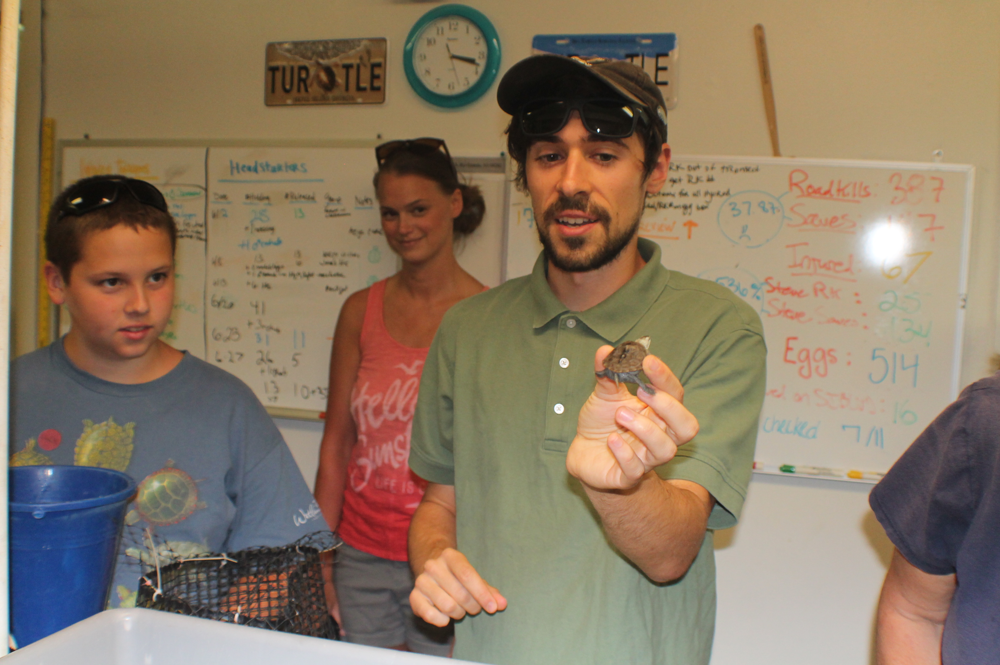

<!-- <font face=calibri> -->


<div style="margin-left:0px;margin-right:400px">
<!-- <div style="margin-left:50px"> -->

<!-- <DIV align = center> -->
<a href="turtleguy.jpg"></a>
<br>
<!-- </div> -->
<font size = 3>Brian Williamson holding a Diamondback Turtle that is about to be released into the wild as part of a turtle rehabilitation project. Brian is a Research Scientist at The Wetlands Institute, of Stone Harbor, NJ.</font>
<br>
<br>
<br>
<br>
<br>

&copy;2016, The 2100 Project.
</center>
</font>